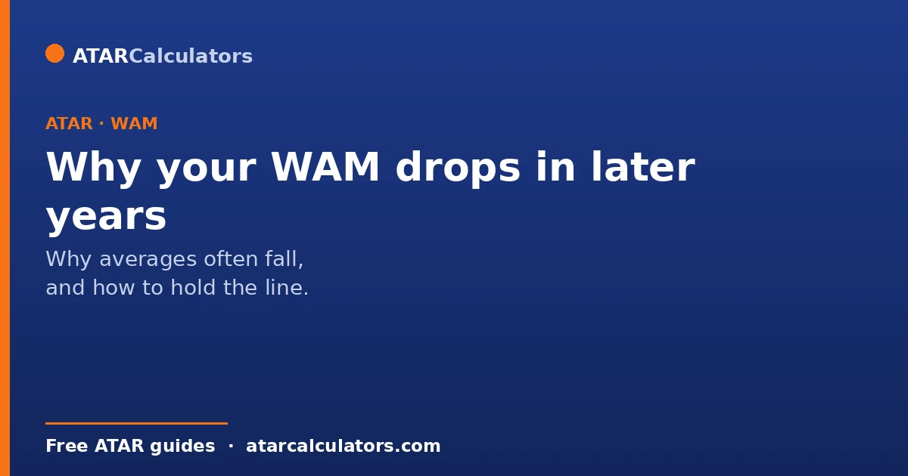
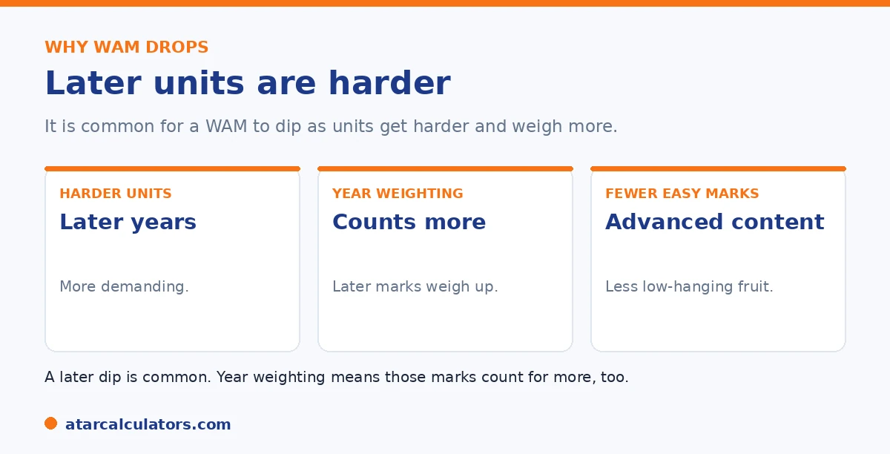

Here is the short version. WAMs often dip in later years for a few reasons. Later units are harder and more specialised, there are fewer easy marks to lift your average, and some universities weight later years more heavily. So a dip counts for more. The encouraging side is that the same weighting means strong later results can lift your WAM. So later years are an opportunity as much as a risk.
If your WAM has slipped since first year, you are not alone. It is one of the most common patterns at university, and it usually has nothing to do with you getting worse.
Below is why it happens and how to manage it. To track yours, use our WAM calculator.
Key takeaways
- Later units are harder and more specialised.
- There are fewer easy marks to lift your average.
- Some universities weight later years more heavily.
- So a later dip can count for more.
- But strong later results can lift your WAM too.
- Later years are an opportunity as much as a risk.
Later units are harder
The first reason is simple. Later-year units are more advanced and specialised. They build on earlier material and demand deeper understanding, so the same effort often yields a lower mark than it did in first year.

This is normal and expected. A mark that drops a few points in a hard third-year unit is not a sign of decline; it reflects more challenging content.
Fewer easy marks to balance things
The second reason is about balance. In early years, broad introductory units often include some easier marks that lift your average. Later on, with fewer of these, there is less to balance out a tougher unit.
So a single hard unit has more effect on your WAM later in your degree, simply because there are fewer gentle marks around it. See our guide on how a WAM is calculated.
Later-year weighting
The third reason depends on your university. Some weight later-year units more heavily in your WAM, so your final years count for more than your first. This is meant to reflect your performance as you near graduation.
So at those universities, a dip in a later, higher-weighted unit pulls your WAM down more than the same dip would have in first year. Check whether your university weights years differently.
The weighting schemes differ enough to be worth checking directly. A common model gives first-year units a lower weight (sometimes half), middle-year units a standard weight, and final-year units the full or highest weight. The logic is that your later performance better reflects the graduate you are becoming. Under that kind of scheme, the same 70 scored in first year and in final year affects your WAM by different amounts. And a strong finish counts for more than a strong start. This cuts both ways. It means a rocky first year does less lasting damage than students fear. But it also means a slump in your final year, when the pressure and difficulty are highest, lands harder. The practical response is not to stress about the weighting but to plan around it. Treat your later years as the ones that matter most for your WAM, protect your time for high-weighted final units, and take some comfort that early stumbles fade if you improve. If your university weights all years equally, none of this applies. That is exactly why reading your own WAM policy once is worth the ten minutes.
Want to track your WAM?
Try the WAM calculator →The upside of weighting
Here is the encouraging part. If your university weights later years more, that cuts both ways. Strong results in your final years can lift your WAM more than early marks did, giving you a real chance to recover.
So a slow start need not define your WAM. Focused effort late in your degree can move the number meaningfully. See our guide on WAM boost strategies.
How to avoid a steep drop
To keep your WAM steady, a few habits help. Choose later-year electives where your strengths fit, stay consistent rather than cramming, and treat each unit as if it counts more. This is because it often does.
And do not panic over a single hard unit. A measured, steady approach across your later years protects your WAM better than chasing every mark. See our guide on what counts as a good WAM.
Common questions
Why does my WAM drop in later years?
Later units are harder and more specialised, there are fewer easy marks to lift your average, and some universities weight later years more heavily. So a dip counts for more. It is a common pattern and rarely means you are getting worse.
Is it normal for a WAM to go down?
Yes, very. Most students see some dip as units get harder and more specialised, and as the easier introductory marks fall away. It usually reflects more challenging content, not a decline in your ability.
Do later years count more for WAM?
At some universities, yes. They weight later-year units more heavily, so your final years count for more than your first. This varies by university, so check whether yours applies year weighting to your WAM.
Can I recover a dropping WAM?
Yes. If your university weights later years more, strong final-year results can lift your WAM more than early marks did. Even without weighting, a focused effort across your remaining units can move the number meaningfully.
How do I stop my WAM dropping?
Choose later-year electives that suit your strengths, stay consistent rather than cramming, and treat each unit as if it counts more. This is because it often does. A steady approach protects your WAM better than chasing every mark.
Track your WAM over time
Estimate your WAM from your marks and credit points. Free, and no signup.
Open the WAM calculator →Related guides
This guide is general information for students, not formal academic advice. WAM and GPA policies, grade bands and honours thresholds vary by university and faculty, and can change. Failed units, year weighting and which units count are all set by each university. Always confirm with your own university's official grading and WAM policy, such as the University of Sydney or your own institution. Reviewed by the ATARCalculators Editorial Team.